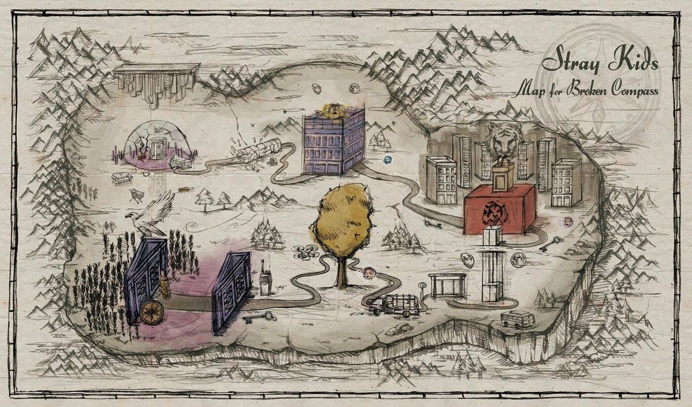

¿QUÉ ES EL SKZVERSE?
El SKZVERSE (también llamado SKZ Universe) es el universo narrativo ficticio que Stray Kids ha construido a través de sus videoclips, canciones y conceptos visuales desde el predebut hasta la actualidad.
No es una historia simple: es una narrativa de múltiples líneas de tiempo y universos paralelos que conecta eras, símbolos y personajes de forma profunda. Cada videoclip puede ser una pieza del rompecabezas.
El tema central siempre ha sido la búsqueda de identidad y libertad frente a una sociedad que intenta controlarlos y uniformarlos. Los integrantes representan individuos que luchan por ser quienes realmente son.
|

El universo de SKZ conecta eras y canciones.
|
|
LAS TRES LÍNEAS DEL LORE
Según las teorías del fandom, el SKZVERSE se divide en tres grandes líneas narrativas identificadas por color:
🔴 LÍNEA ROJA
Las Dos Lunas
La historia de la dualidad. Dos mundos que coexisten, representados por la imagen de dos lunas en el cielo.
Esta línea comienza con "Hellevator" y continúa en la era I AM.
El objeto central es una pirámide que conecta las líneas narrativas.
|
🟢 LÍNEA VERDE
Los Hombres Lobo
La historia de quienes se transforman. Los integrantes descubren poderes o naturalezas ocultas dentro de sí mismos.
La metamorfosis representa el proceso de despertar y aceptarse.
Conectada con la era ODDINARY y el concepto del "Sound Monster".
|
🔵 LÍNEA AZUL
Los Ángeles Caídos
La historia de seres que descienden de otro plano. Representan la pureza original que choca con el mundo real.
El viaje de los ángeles caídos simboliza la pérdida de inocencia y el crecimiento.
Relacionada con la era CLÉ.
|
|
SÍMBOLOS RECURRENTES
LA BRÚJULA ROTA
Uno de los símbolos más icónicos de Stray Kids.
Representa la incertidumbre del camino: no saber hacia dónde ir,
pero avanzar de todas formas. Aparece en la canción "Broken Compass"
y es el diseño de su light stick oficial.
EL ASCENSOR
Elemento central de "Hellevator". El ascensor representa la transición entre realidades o niveles de consciencia.
Subir o bajar en él significa alejarse del sistema o sumergirse más en él.
LAS DOS LUNAS
Símbolo de dualidad que apareció en el MV de "Levanter".
Dos lunas que eventualmente colisionan y se fusionan en una sola,
representando la unificación de todas las líneas temporales del Prequel.
|
LA LLAVE (CLÉ)
En la era CLÉ, las llaves representan el acceso a un nuevo camino.
Cada llave abre una puerta diferente hacia el futuro, simbolizando las decisiones
que los integrantes deben tomar frente a los obstáculos del sistema.
EL AUTOBÚS
En "District 9", los integrantes roban un autobús para escapar del sistema.
El autobús se convirtió en símbolo de la fuga colectiva y la creación de
su propio espacio seguro: el Distrito 9.
EL GLITCH
Representa el momento en que los integrantes despiertan dentro del sistema.
Un error en la matrix que no puede ser ignorado.
El glitch es el símbolo de su rebelión y autoconciencia.
|
|
LA HISTORIA DEL PREQUEL
El arco narrativo principal se llama "Prequel" y abarca desde el predebut hasta GO LIVE (2020).
| ERA |
QUÉ OCURRE EN LA HISTORIA |
| HELLEVATOR (2017) |
El comienzo. Los integrantes están atrapados en un sistema que los controla. Un ascensor representa la decisión de escapar o rendirse. |
| DISTRICT 9 (2018) |
Establecen el "Distrito 9" como su santuario, un lugar creado por ellos para ser libres después de escapar del sistema que suprimía la individualidad. |
| CLÉ: MIROH (2019) |
Entran a la ciudad de Miroh, un laberinto urbano. El tigre simboliza su evolución y confianza creciente. Ahora son desafiantes, no solo fugitivos. |
| CLÉ 2: SIDE EFFECTS |
Se bifurcan dos líneas temporales. En una, aceptan el boleto hacia el "Nuevo Mundo". En otra, rechazan la oferta. Las consecuencias de cada decisión se exploran. |
| GO LIVE (2020) |
Las dos lunas colisionan y se fusionan. Todas las líneas temporales colapsan en una sola realidad donde Stray Kids finalmente son libres. Es un renacimiento. |
|
"El SKZVERSE no tiene un final definitivo.
Cada álbum es un nuevo capítulo que los fans deben descifrar."
← Volver al inicio
|